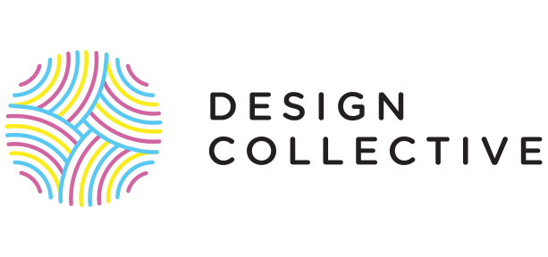

We are a design community at UT Austin.
Our goal is to foster the next generation of designers through education, collaboration, and application

DECO Learn is a 12-week educational program for beginners. Our student instructors lead a modern curriculum focused on developing foundational skills, ranging from typography to user experience. The program is project-driven, with a heavy focus on peer critiques.
DECO Build is a collaborative project-based environment for building design experience. Members work in teams to drive a creative project to completion, taking on responsibilities relevant to their interests. Someone interested in graphic design might tackle branding while their teammate works on the user experience.
DECO Studio is a student-run design studio that takes on work from the local community. For seasoned designers, this is an opportunity to give back to Austin while also building their portfolio.